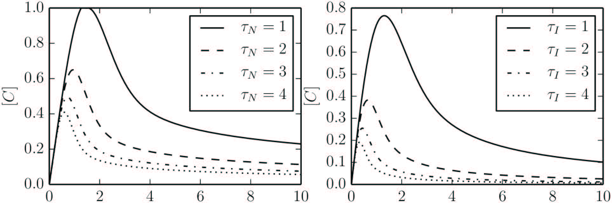

Applications of MBAM
MBAM
- Choose an initial direction: eigenvector of $\mathcal{I}$ with smallest eigenvalue
- Choose the orientation so that the parameter space norm will grow when following the geodesic.
- This direction is usually involves a complicated combination of most parameters.
- Solve the geodesic equation numerically
- Monitor the behavior of the parameters in the geodesic to identify a limiting approximation.
- Requires some human intervention/insight.
- Evaluate the limit to remove one parameter combination.
- Fit the behavior of the new model to original behavior.
Systems Biology: Adaptation
Adaptation: The ability of a system to reset itself after responding to a stimulus.
Characterized by four phenomenological parameters, $\phi$.
Characterized by four phenomenological parameters, $\phi$.
Transtrum, Mark K., and Peng Qiu. "Bridging Mechanistic and Phenomenological Models of Complex Biological Systems." PLoS Comput Biol 12.5 (2016): e1004915.
Mechanisms of Adaptation
An exhaustive search* of all possible 3-node enzyme network topologies revealed all adaptive networks fall into two broad categories:
- Incoherent Feed Forward Loop (IFFLP)
- Negative Feedback Loop (NFBL)
Ma, Wenzhe, et al. "Defining network topologies that can achieve biochemical adaptation." Cell 138.4 (2009): 760-773.
Negative Feedback Loop
\begin{align}
\frac{dA}{dt} & = k_{IA} I \frac{ 1 - A}{1 - A + K_{IA}} - F_A k_{FA} \frac{A}{A + K_{FA}} \\
\frac{dB}{dt} & = k_{CB} C \frac{ 1 - B}{1 - B + K_{CB}} - F_B k_{FB} \frac{B}{B + K_{FB}} \\
\frac{dC}{dt} & = k_{AC} A \frac{ 1 - C}{1 - C + K_{AC}} - k_{BC} B \frac{C}{C + K_{BC}}
\end{align}
The first three MBAM limits are
Exercise: Find the model after evaluating these three limits.
The first three MBAM limits are
- $k_{FA}, K_{FA} \rightarrow \infty$
- $k_{CB}, K_{CB} \rightarrow \infty$
- $ (k_{CB}/K_{CB}), k_{FB}, K_{FB}, 1/k_{BC} \rightarrow 0$
Exercise: Find the model after evaluating these three limits.
Solution:
\begin{align}
\frac{dA}{dt} & = k_{IA} I \frac{ 1 - A}{1 - A + K_{IA}} - \left( \frac{k_{FA}}{K_{FA}} \right) F_A A \\
\frac{d \tilde{B}}{dt} & = \left( \frac{k_{CB} k_{BC}}{K_{BC}} \right) C - F_B \left( k_{FB} k_{BC} \right) \frac{ \tilde{B}}{\tilde{B} + \left( K_{FB}k_{BC} \right) } \\
\frac{dC}{dt} & = k_{AC} A \frac{ 1 - C}{1 - C + K_{AC}} - \tilde{B} \frac{C}{C + K_{BC}} \\
\tilde{B} & = k_{BC} B
\end{align}
Reduced NFBL
\begin{align}
\frac{dA}{dt} & = k_{IA} \Theta(1 - A) \\
\frac{d \tilde{B}}{dt} & = \left( \frac{k_{CB} k_{BC}}{K_{CB} K_{BC} } \right) C - F_B \left( \frac{k_{FB}}{K_{FB}} \right) \tilde{B} \\
\frac{dC}{dt} & = k_{AC} A \Theta(1 - C) - \tilde{B} C
\end{align}
Four parameters. Their sensitivities span the same four phenomenological degrees of freedom as $\phi$.
Reduced IFFLP
\begin{align}
\frac{dA}{dt} & = k_{IA} \Theta(1- A) \\
\frac{dB}{dt} & = k_{AB} A \Theta(1 - B) \\
\frac{dC}{dt} & = k_{AC} A \Theta(1 - C) - \frac{k_{BC}}{K_{BC}} B C
\end{align}
Four parameters. Their sensitivities span the same four phenomenological degrees of freedom as $\phi$ and as the reduced NFBL model.
EGFR Revisited
- MBAM reduces a model while trying to preserve a set of predictions.
- Different choices of predictions could lead to different models.
- The original EGFR simplification (12 parameters) fit the data of Brown et al..
- Other possibilities
- All species (19 parameters)
- Brown et al., Experiments (12 Parameters)
- Input/Output behavior in response to EGF and NGF, (6 Parameters)
- Input/Output behavior in response to EGF (4 parameters=NFBL Adaptation)
Reducing the number of parameters systematically condenses the network topology to reveal the negative feedback loop controlling the adaptive response to EGF.
Adaptation: Why stop at 4 parameters?
- Although four phenomenological parameters define an adaptation curve, we can remove more parameters from the model
- The chemical control knobs cannot tune the phenomenological parameters arbitrarily.
- Boundaries limit ranges of behavior.
- Example: Perfect adaptation, $\phi_4 = 0$, is difficult.
- What is the minimal number of parameters that still give an adaptation-like curve?
Minimal Models of Adapatation
NFBLB
\begin{align}
\frac{dC}{dt} & = k_AC I \Theta(1 - C) - \tilde{B} C \\
\frac{d\tilde{B}}{dt} & = \frac{k_{CB} k_{BC}}{K_{CB} K_{BC}} C
\end{align}
IFFLP
\begin{align}
\frac{dC}{dt} & = k_{AC} I \Theta(1 - C) - \tilde{B} C \\
\frac{d\tilde{B}}{dt} & = \frac{k_{AB} k_{BC}}{K_{BC}} I
\end{align}
- Both models involve two parameters.
- Two characteristic time-scales:
- Time to respond
- Time to reset
- Adaptation curves universally characterized by the ratio of these two times: $\tau$.
Trade-offs in Adaptation

Universal Adaptation curves for different values of $\tau$.
- $\tau$ controls both maximal response size and time.
- Hypothesis: Biological adaptation evolved to maximize something subject to this constraint.
- This prediction only possible by considering the relationship between mechanism and phenomenology.
Nuclear Energy Density Functional
Model: Semiempirical functionals that start from a microscopically motivated
ansatz for the density dependence of the energy of a system of protons and neutrons
Nikšić, Tamara, and Dario Vretenar. "“Sloppy” nuclear energy density functionals: Effective model reduction." Physical Review C 94.2 (2016): 024333.
FIM Eigenvectors and Manifold Widths
Geodesics and Boundaries
Conclusions
"...a viable strategy is to start with a very general
ansatz for the functional form of the density dependence,
derived or motivated by a microscopic many-body calculation,
even if the resulting functional is manifestly sloppy....
The important
result is that, instead of a priori deciding on the form of the
functional density dependence to be used in calculations of
finite nuclei, and then optimizing the given set of parameters,
by using the MBAM it becomes possible that the data that one
wishes to describe determine the form of the functional. Ideally
the final result should be a nonsloppy functional that contains
only stiff combinations of parameters and can, therefore, be
reliably extrapolated to regions where no data are available."
Power Systems Engineering
- Models of Synchronous Generators (SG) transient response to perturbations
- Goal: Use simplified models of SG in large models of grid.
- Multiple time scales, each characterized by its own parameter.
- Traditionally simpified by a sequence of singular perturbations.
- Singular perturbation: $T_i \rightarrow 0$ (fast dynamics slaved to slow dynamics)
- MBAM:
- Some singular perturbation limits $(T_i \rightarrow 0)$
- In other cases $(T_i \rightarrow \infty)$
- Some generator axes are slow (on the time scale of transients) and should be approximated as constant.
- Result:
- MBAM reduced models of SG lead to more stable large-scale models than the singular-perturbation counterpart
Transtrum, Mark K., Andrija T. Saric, and A. M. Stankovic. "Measurement-Directed Reduction of Dynamic Models in Power Systems." IEEE Transactions on Power Systems.
Inferring Mechanisms: Adaptation Revisited
Ma et al. conducted an exhaustive search of all 3-node enzyme networks (> 16,000) in search of mechanisms that can achieve adaptation.
Results:
Results:
- 395 distinct could achieve adaptation
- All networks contained either a incoherent feed forward or a negative feedback motif.
Ma, Wenzhe, et al. "Defining network topologies that can achieve biochemical adaptation." Cell 138.4 (2009): 760-773.
MBAM Approach
- We considered the "Fully Connected" 3-node Network (FCN)
- Physically unrealistic
- All real networks can be achieved by limiting approximations
- Use MBAM to remove unnecessary edges.

Asp, Merrill. "Adaptation in Enzyme Networks: Searching for Minimal Mechanisms." Senior Thesis. Brigham Young University. (2016)
Discovered Mechanism
- Minimal Network Recovered by MBAM
- Not present in the list of Ma et al.
- Presumably other mechanisms could be recovered by repeating from other starting points?
- Is there anyway to recover all mechanisms?
- Can this approach be scaled to larger networks?
Neuroscience: Hodgkin-Huxley
- Single Hodgkin-Huxley neuron in response to varying input current
- Explores transition from non-spiking to spiking and back to non-spiking
- 25 parameter model (3 structurally unidentifiable)
- Fit well with 15 parameter model (shown)
- Spiking vanishes at 12 parameters
- Which predictions are important?
Barh, Tyler et al., Unpublished.